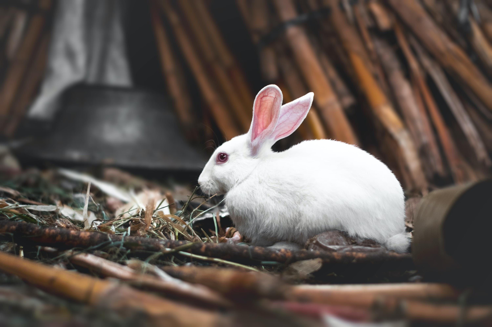

Despertando del País de las MaravillasWaking up from Wonderland

No sé cuándo cambió mi percepción del tiempo… Recuerdo ser pequeño y sentir que el tiempo pasaba muy despacio. Pensar en que faltaban meses para Navidad, para verano, para el inicio un nuevo curso con la oportunidad de empezar de cero. Meses para el próximo partido, para la próxima carrera, para que saliera ese nuevo juego, esa película que me apetecía ver, ese viaje de fin de curso. Recuerdo ir creciendo, cambiar etapas. Recuerdo mi último verano de verdad al acabar bachillerato, tan improvisado como inolvidable. Recuerdo empezar la universidad, llegar a ese lugar por explorar que era la facultad y presentarme a desconocidos que se convertirían en grandes amigos.
Me imagino que ahí es cuando empezó… En algún momento el tiempo pasó de ir despacio a acelerarse. Y es allí cuando lo vi por primera vez. Ese conejo blanco que sacó un reloj de su chaleco y empezó a decirme al oído una frase que me ha acompañado hasta hoy: “Llegas tarde, llegas tarde, llegas tarde…”
Llegas tarde
¿Cuánto tiempo ha pasado desde que empecé a perseguir a ese conejo? ¿Cuándo empecé a sentir ansiedad por el paso del tiempo? ¿Cuándo atropellaron las prisas a la ilusión y empecé esta carrera sin sentido?
Seguramente fue tras mi primer año “perdido” de universidad. Absurdo que yo mismo lo siga pensando así, pero así es como me viene siempre a la cabeza. “Perdido” porque sólo aprobé dos asignaturas en septiembre. Porque el resto del curso estuve ayudando a mi madre y acompañándola mientras superaba un cáncer, cosa que he ocultado celosamente en cualquier conversación hasta el día de hoy.
El año que más aprendí en mi vida. En el que maduré, pero también en el que sentí que me retrasaba. En el que empecé a ir corriendo a todos sitios. En el que comencé a repetirme sin parar: “Llegas tarde, llegas tarde, llegas tarde…”
La madriguera
Y fui cayendo por una madriguera infinita. Corrí y corrí, sin preguntarme por qué y hacia dónde. Cada asignatura era un un trámite que superar y no una oportunidad para aprender. Obvié todo lo que no fueran estudios por considerarlo un lujo que no me podía permitir: asociaciones, comunidades, Erasmus, aficiones, deportes, conocer gente… Momentos que no volverán y me hubieran aportado mucho, por el miedo a seguir retrasándome.
Mientras caía, vi a compañeros disfrutar, experimentar, conseguir logros y hacer cosas admirables. Me recriminé no hacer lo mismo que ellos y al poco tiempo dejé de ver y celebrar las cosas que sí iba consiguiendo. Menos mal que al menos me permití un viaje de ecuador, al que fui medio arrastrado, rodeado de amigos y con muchos momentos maravillosos que me hacen sonreír con solo recordarlos. Aprobé mi última asignatura y qué absurdo es ahora darme cuenta que aún tengo pendiente celebrar que terminé la carrera.
En busca del jardín
Y acabé en una habitación preparado para salir al mundo. Pero allí solo había una puerta muy pequeña y un frasco que decía “Bébeme”, que me enseñó que para seguir avanzando tenía que deshacerme de esa arrogancia que te da la juventud y el acabar la universidad, y reconocer lo poco que sabía y todo lo que tenía por aprender.
Participé en proyectos y usé tecnologías que me hicieron sentir muy pequeño, y adquirí conocimientos y superé retos que me hicieron sentir grande. Atravesé puertas que creía imposible atravesar, y toqué techos hasta sacar las manos y los pies fuera del edificio (o eso pensaba).
Llegué a bellos jardines. Quise quedarme pero me pudo el afán de encontrar nuevos jardines, quizás más bonitos, o el miedo a ser considerado una mala hierba y ser arrancado por la fuerza. Conocí flores extraordinarias, orugas prepotentes, y gatos cuya sonrisa parece que aún sigue ahí, flotando en el aire. Tomé por locos a aquellos que encontré por el camino, que desafiaban mi lógica y celebraban cada día con una gran fiesta, con todo lo que podía haber aprendido de ellos…
Y seguí corriendo y corriendo, persiguiendo a aquel conejo que me decía que llegaba tarde, sin saber aún a dónde.
El juicio
Y por fin me he dado cuenta que toda esta carrera sólo me lleva a un juicio absurdo, donde la sentencia viene antes que el veredicto, y en el que, haga lo que haga, acabaré perdiendo la cabeza. Que si bien me siento afortunado por toda esta historia que he vivido, fui demasiado rápido para poder disfrutarla como debería, con la cabeza demasiado fija en el horizonte para apreciar los detalles, detenerme y aprender aún más de ella.
Me he dado cuenta que debo dejar de perseguir a otros y tomar mi propio camino. Que a veces la mejor forma de conseguir llegar a tu destino no es correr sino caminar despacio. Que casi siempre el jurado más crítico soy yo mismo, y que también soy yo quien tengo el poder de controlar mi tamaño para sentirme más grande o más pequeño para superar los obstáculos que se me presenten.
Despertar
Y ahora que me he dado cuenta de todo esto, mi objetivo es no volver a ese “País de las maravillas”. Quiero caminar despacio, disfrutar del camino, elegir a dónde dirigirme.
Y sé que no será fácil, que volverán la ansiedad y las prisas, las ganas de seguir otros caminos que no van hacia donde yo quiero, el sentirme demasiado grande o demasiado pequeño sin poder controlarlo, el olvidar quién soy y tener que parar otra vez…
Solo espero que la experiencia me sirva para no cometer los mismos errores. Que cuando el conejo blanco vuelva a decirme que llego tarde, poder contestarle que nunca llegué tarde, sino exactamente cuando me lo propuse. Aunque esa es ya otra historia para otro día.
I don't know when my perception of time changed… I remember being little and feeling that time went by very slowly. Thinking that Christmas was months away, summer was months away, the start of a new school year with the chance to begin from scratch was months away. Months until the next match, the next race, until that new game came out, that movie I wanted to see, that end-of-year trip. I remember growing up, moving through stages. I remember my last real summer after finishing high school, as improvised as it was unforgettable. I remember starting university, arriving at that place still waiting to be explored that was the faculty and introducing myself to strangers who would become great friends.
I imagine that's when it started… At some point time went from moving slowly to speeding up. And that's when I saw it for the first time. That white rabbit who pulled a watch out of his waistcoat and began whispering in my ear a phrase that has stayed with me to this day: “You're late, you're late, you're late…”
You're late
How long has it been since I started chasing that rabbit? When did I start feeling anxious about the passing of time? When did the rush run over my excitement and I began this senseless race?
It was probably after my first “wasted” year of university. Absurd that I still think of it that way, but that's how it always comes to mind. “Wasted” because I only passed two subjects in September. Because for the rest of the year I was helping my mother and being by her side as she got through cancer, something I've jealously hidden in every conversation to this day.
The year I learned the most in my life. The one in which I matured, but also the one in which I felt I was falling behind. The one in which I started rushing everywhere. The one in which I began repeating to myself without pause: “You're late, you're late, you're late…”
The rabbit hole
And down an endless rabbit hole I fell. I ran and ran, without asking myself why or where to. Every subject was a formality to get through and not an opportunity to learn. I overlooked everything that wasn't studying, considering it a luxury I couldn't afford: associations, communities, Erasmus, hobbies, sports, meeting people… Moments that won't come back and would have given me so much, all out of the fear of falling further behind.
As I fell, I watched classmates enjoy themselves, experiment, achieve things and do admirable work. I reproached myself for not doing the same as them, and before long I stopped seeing and celebrating the things I was actually achieving. Thank goodness I at least allowed myself a halfway trip, which I went on half-dragged, surrounded by friends and full of wonderful moments that make me smile just to remember them. I passed my last subject, and how absurd it is to realize now that I still have to celebrate finishing my degree.
In search of the garden
And I ended up in a room, ready to go out into the world. But there was only a very small door and a bottle that said “Drink me,” which taught me that to keep moving forward I had to rid myself of that arrogance that youth and finishing university give you, and acknowledge how little I knew and all I had left to learn.
I took part in projects and used technologies that made me feel very small, and I gained knowledge and overcame challenges that made me feel big. I went through doors I thought impossible to go through, and I touched ceilings until my hands and feet stuck out of the building (or so I thought).
I reached beautiful gardens. I wanted to stay, but I was overcome by the urge to find new gardens, perhaps more beautiful ones, or by the fear of being considered a weed and being yanked out by force. I met extraordinary flowers, arrogant caterpillars, and cats whose smile seems to still be there, floating in the air. I took for madmen those I met along the way, who defied my logic and celebrated every day with a great party, with all I could have learned from them…
And I kept running and running, chasing that rabbit who told me I was late, still not knowing where to.
The trial
And I've finally realized that this whole race only leads me to an absurd trial, where the sentence comes before the verdict, and in which, no matter what I do, I'll end up losing my head. That while I feel fortunate for this whole story I've lived, I went too fast to be able to enjoy it as I should have, my head too fixed on the horizon to appreciate the details, to stop and learn even more from it.
I've realized that I must stop chasing others and take my own path. That sometimes the best way to reach your destination isn't to run but to walk slowly. That almost always the most critical juror is myself, and that I'm also the one who holds the power to control my size, to feel bigger or smaller in order to overcome the obstacles that come my way.
Waking up
And now that I've realized all of this, my goal is to never go back to that “Wonderland.” I want to walk slowly, enjoy the journey, choose where I'm heading.
And I know it won't be easy, that the anxiety and the rush will return, the urge to follow other paths that don't lead where I want to go, the feeling of being too big or too small without being able to control it, the forgetting of who I am and having to stop once again…
I only hope the experience helps me not to make the same mistakes. That when the white rabbit tells me again that I'm late, I'll be able to answer that I was never late, but exactly on time. Though that's another story for another day.